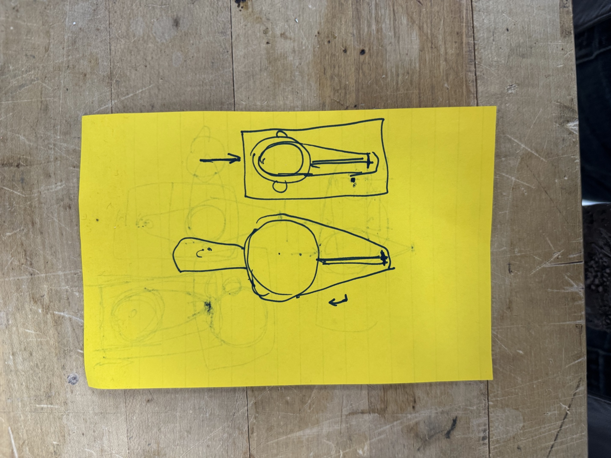
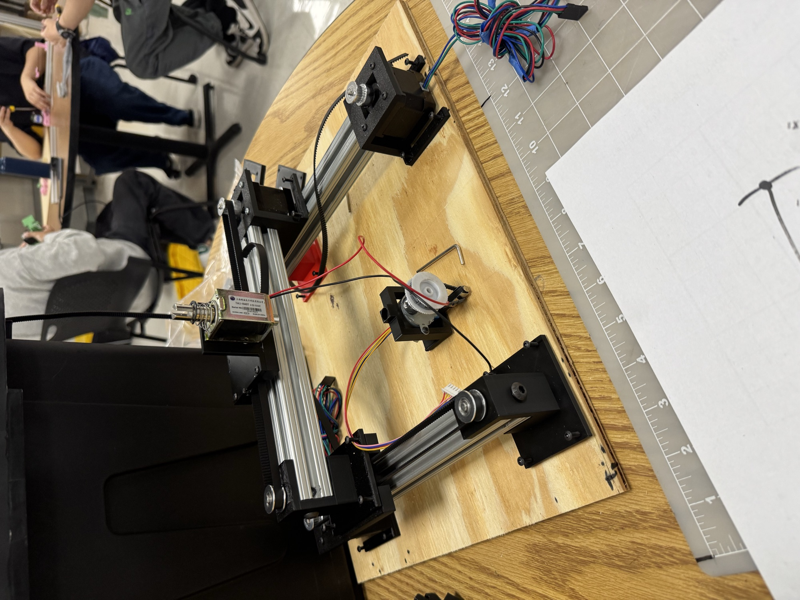
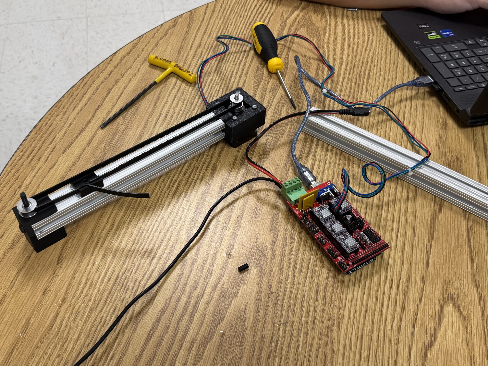
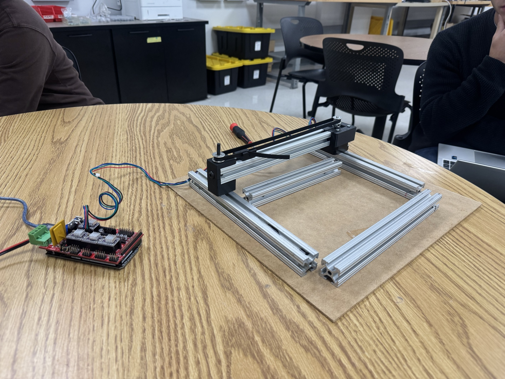
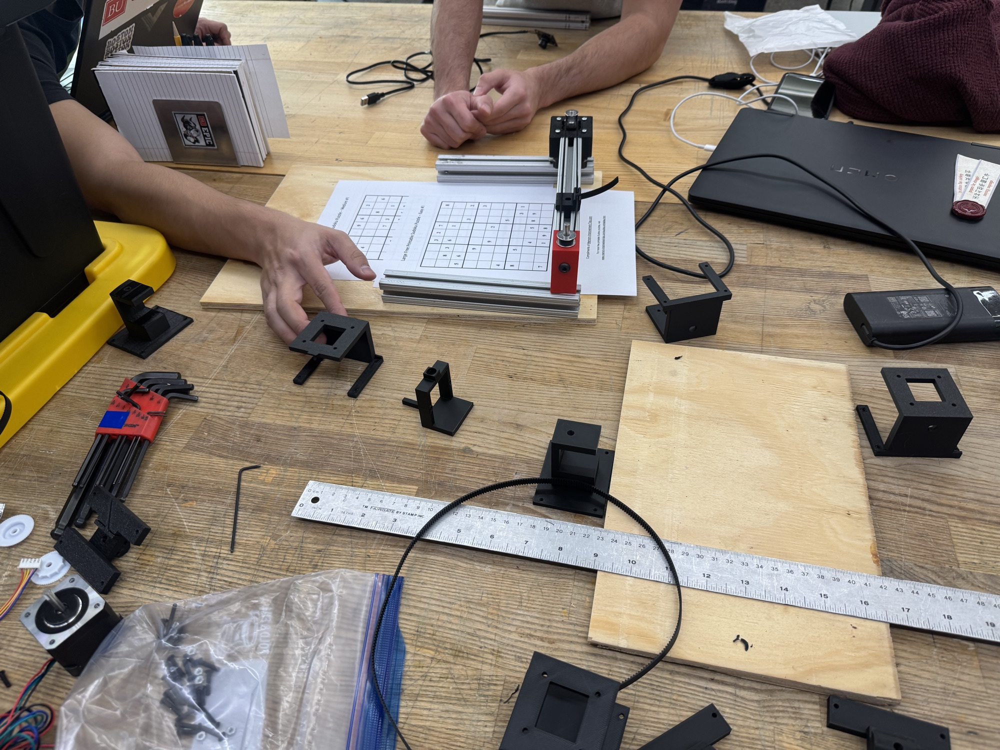

Overview
We wanted a machine that solves a paper Sudoku the way a person would: look at the page, think, and write the answers in.
The puzzle sheet is taped onto a raised bed. A camera above reads the grid, and a stamp head moves to each empty cell and presses in the right digit. It has 3.5 degrees of freedom: belt-driven X and Y stages, a looped stamp belt that rotates digits 1 to 9 into position, and a solenoid that presses the chosen digit onto the page. The solenoid counts as half, since it only moves up and down.
My part was making it physically work
3D printing. I printed the motor mounts, idler blocks, belt carriages and stamp holder, then helped test them and noted what each part needed fixed or improved.
Assembly. I built the aluminium-extrusion gantry, mounted it on the wooden base, installed the stepper motors, and fitted and tensioned the timing belts on the X and Y stages and the stamp belt.
Troubleshooting. When something failed in testing, like a slipping belt, a part out of alignment or an axis not reaching its position, I found the cause and fixed it on the spot so the team could keep testing.


It sees, reads, solves, plans, then stamps
- See. A live camera preview outlines the 9×9 grid in green. The operator presses Space to capture, and the image is flattened into a square, top-down view.
- Read. Each cell is cleaned up, with shadows divided out and grid lines removed, then checked for ink. A k-nearest-neighbour classifier trained on digits in 15 common fonts recognises the numbers.
- Solve. A backtracking solver fills the most constrained cell first.
- Plan. The stamp belt only turns forward, so the machine stamps all the 1s, then all the 2s, up to 9, visiting cells in nearest-neighbour order. It shows the plan as red dots on the camera image for a final check.
- Stamp. Python sends G-code over USB to Marlin. For each cell the carriage moves to the centre, the belt rotates the right digit under the head, and the solenoid fires for 80 ms.
It would rather stop than stamp a wrong answer
The solver also counts solutions. If a read gives no solution or more than one, a digit was misread, so the machine stops and asks the operator to correct the grid. Every puzzle it reads correctly is added to its training library, so recognition gets better with use.
The machine calibrates itself
To turn a cell in the camera image into a real machine position, it stamps at least four dots in the margin around the grid. The camera finds each new dot by comparing before-and-after photos, and a least-squares fit links paper millimetres to machine millimetres.
The script reports the error for each mark and warns if it's over 1 mm, if the scale is off, or if the paper has moved.
We built it one axis at a time
- One axis. We started with a single X axis: cut the aluminium extrusion and printed first drafts of the carriage and motor mounts.
- Adding Y. We built two Y axes the same way and used them as the base that carries X.
- Stamp head. We added the solenoid and carriages and worked out how to connect the carriages to the motor blocks.
- Vision, in parallel. Meanwhile a teammate tested the camera and wrote the code that detects and solves the puzzle.



Under the hood
- Frame. An XY gantry of slotted aluminium extrusion on a plywood base, with about 140 × 115 mm of travel. Two Y stages move together and an X rail bridges them.
- Motion. NEMA 17 steppers drive timing belts over toothed pulleys and idlers.
- Stamp head. A push-pull solenoid presses a looped belt of digit stamps 1 to 9, spaced 45 mm apart, moved by its own stepper.
- Printed parts. Black motor mounts, idler blocks, belt clamps and carriage plates, plus red end supports.
- Bed and camera. A laser-cut finger-jointed box raises the sheet, and a plywood arm on an aluminium post holds the camera face-down.
- Electronics. A RAMPS shield on an Arduino Mega running Marlin. X and Y use the X and Z drivers, the stamp belt uses the extruder channel, and the solenoid switches from pin D10.
- Software. Python with OpenCV and NumPy, split into
sudoku_solver.py,train_fonts.py,calibrate_grid.py,test_motion.pyandrun_machine.py. - Safety. Every move is checked against travel limits, solenoid presses are capped at 500 ms, and the solenoid always switches off on errors or aborts.
Result
In the demo, the camera detects the grid, the carriage moves cell by cell across the sheet, and the missing digits are stamped into the empty cells.